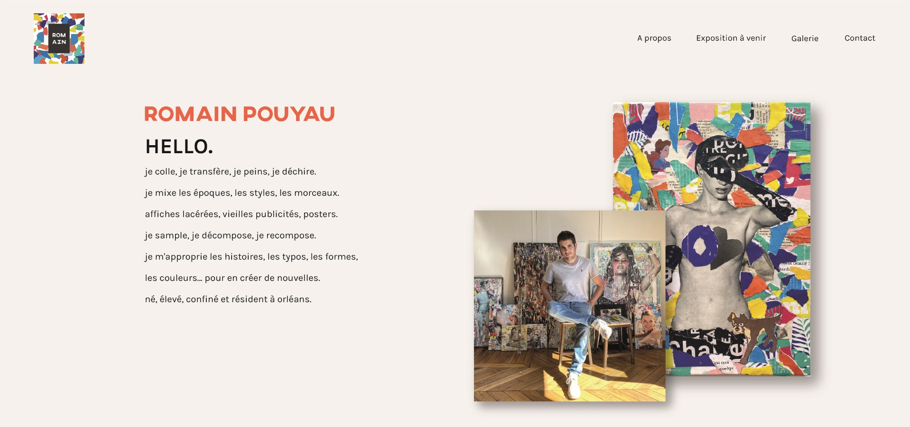

Romain
2020

Romain est un artiste qui fait du collage. J’ai eu la mission, dans le cadre de ma licence professionnelle, de créer un logo et un webdesign pour cet artiste. L’objectif premier de ces réalisations était d’aider l'artiste à se faire connaître afin d'exposer dans de nouvelles galeries. Pour le logo, je me suis inspirée de ses collages et notamment d’une de ses toiles qui était particulièrement coloré. Pour le webdesign, j’ai choisi un fond neutre et un web design assez minimaliste pour mettre en valeur ses œuvres intenses et colorées. J’ai tenu à garder des lignes bien définies dans la maquette pour rappeler l’univers d’une galerie d’art et de ses tableaux.